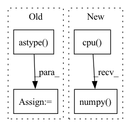

Pattern ID :12080
Before Change
if gallery_ids is None:
gallery_ids = np.arange(n)
if query_cams is None:
query_cams = np.zeros(m).astype( np.int32)
if gallery_cams is None:
gallery_cams = np.ones(n).astype(np.int32)
// Ensure numpy array
query_ids = np.asarray(query_ids)After Change
def mean_ap(dist_mat, query_ids, gallery_ids, query_cams, gallery_cams):
dist_mat = dist_mat.cpu().numpy()
m, n = dist_mat.shape
// Ensure numpy array
query_ids = np.asarray(query_ids)
gallery_ids = np.asarray(gallery_ids)In pattern: SUPERPATTERN
Frequency: 5
Non-data size: 4
Instances Fragment ID: 40764174
Project Name: thuml/transfer-learning-library
Commit Name: f3f63a2322330a2a298fcba86b21ecb04f3667d5
Time: 2021-07-29
Author: chenbx18@mails.tsinghua.edu.cn
File Name: common/utils/metric/reid.py
M Class Name: AnonimousClass
N Class Name: AnonimousClass
M Method Name: mean_ap(5)
N Method Name: mean_ap(5)
M Parent Class:
N Parent Class:
M File Name: common/utils/metric/reid.py
N File Name: common/utils/metric/reid.py
M Start Line: 92
M End Line: 104
N Start Line: 71
N End Line: 71
Before Change
if query_cams is None:
query_cams = np.zeros(m).astype(np.int32)
if gallery_cams is None:
gallery_cams = np.ones(n).astype( np.int32)
// Ensure numpy array
query_ids = np.asarray(query_ids)
gallery_ids = np.asarray(gallery_ids)
query_cams = np.asarray(query_cams)After Change
def cmc(dist_mat, query_ids, gallery_ids, query_cams, gallery_cams, topk=100, separate_camera_set=False,
single_gallery_shot=False, first_match_break=False):
dist_mat = dist_mat.cpu().numpy()
m, n = dist_mat.shape
// Ensure numpy array
query_ids = np.asarray(query_ids)
gallery_ids = np.asarray(gallery_ids) Fragment ID: 40764159
Project Name: thuml/transfer-learning-library
Commit Name: f3f63a2322330a2a298fcba86b21ecb04f3667d5
Time: 2021-07-29
Author: chenbx18@mails.tsinghua.edu.cn
File Name: common/utils/metric/reid.py
M Class Name: AnonimousClass
N Class Name: AnonimousClass
M Method Name: cmc(9)
N Method Name: cmc(9)
M Parent Class:
N Parent Class:
M File Name: common/utils/metric/reid.py
N File Name: common/utils/metric/reid.py
M Start Line: 31
M End Line: 43
N Start Line: 20
N End Line: 20
Before Change
fastmarch_time = time.time() - tic
tic = time.time()
geodistkraster_output = geodesic_distance_2d(
input_image, Seed.astype( np.uint8) , lamb, iterations
)
geodistkraster_time = time.time() - tic
After Change
tic = time.time()
toivanenraster_output = np.squeeze(
FastGeodis.generalised_geodesic2d_toivanen(input_image_pt, seed_image_pt, v, lamb, iterations).cpu().numpy()
)
toivanenraster_time = time.time() - tic
tic = time.time() Fragment ID: 40764188
Project Name: masadcv/fastgeodis
Commit Name: a1906e989649c1f0b8fdbed147c1d576ac5c41f3
Time: 2022-07-22
Author: muhammad.asad@kcl.ac.uk
File Name: samples/demo2d.py
M Class Name: AnonimousClass
N Class Name: AnonimousClass
M Method Name: evaluate_geodesic_distance2d(2)
N Method Name: evaluate_geodesic_distance2d(2)
M Parent Class:
N Parent Class:
M File Name: samples/demo2d.py
N File Name: samples/demo2d.py
M Start Line: 29
M End Line: 158
N Start Line: 18
N End Line: 100
Before Change
prediction = prediction.reshape(-1).astype("int64")
target = target.reshape(-1).astype("int64")
down_pred = down_pred.reshape(-1).astype("int64")
down_target = down_target.reshape(-1).astype( "int64")
self.evaluator["1"].addBatch(prediction, target)
self.evaluator["8"].addBatch(down_pred, down_target)
returnAfter Change
// target[target>0.5] = 1.0
// target[target<=0.5] = 0.0
target = target.cpu().numpy()
scale2_target = scale2_target.cpu().numpy() //[6, 1, 7, 128, 128]
scale4_target = scale4_target.cpu().numpy() //[6, 1, 4, 64, 64]
// print("target", target.shape)
// print("scale 2 target", scale2_target.shape) Fragment ID: 40764155
Project Name: coperception/star
Commit Name: 6a0409967e276127415af7e0a80fe34de9f445cc
Time: 2022-06-13
Author: 954742885@qq.com
File Name: coperception/utils/metrics.py
M Class Name: Metrics
N Class Name: Metrics
M Method Name: add_batch(3)
N Method Name: add_batch(3)
M Parent Class:
N Parent Class:
M File Name: coperception/utils/metrics.py
N File Name: coperception/utils/metrics.py
M Start Line: 152
M End Line: 178
N Start Line: 153
N End Line: 190
Before Change
def inference(model, device, input_path):
img = Image.open(input_path)
img = np.array(img.convert("RGB")).astype( np.float32)
img = (img - mean) / std
img = cv2.resize(img, dsize=(448, 448), interpolation=cv2.INTER_LINEAR)
img = torch.from_numpy(img)
img = img.permute(2, 0, 1)After Change
def inference(model, device, img):
img = img.cpu().numpy()
img = (img - mean) / std
img = cv2.resize(img, dsize=(448, 448), interpolation=cv2.INTER_LINEAR)
img = torch.from_numpy(img)
img = img.permute(2, 0, 1) Fragment ID: 40764160
Project Name: modelscope/modelscope
Commit Name: d40cc98994d7c5150b39373d6678f9eb895efb88
Time: 2022-10-25
Author: tingwei.gtw@alibaba-inc.com
File Name: modelscope/models/cv/product_segmentation/seg_infer.py
M Class Name: AnonimousClass
N Class Name: AnonimousClass
M Method Name: inference(3)
N Method Name: inference(3)
M Parent Class:
N Parent Class:
M File Name: modelscope/models/cv/product_segmentation/seg_infer.py
N File Name: modelscope/models/cv/product_segmentation/seg_infer.py
M Start Line: 63
M End Line: 64
N Start Line: 63
N End Line: 63